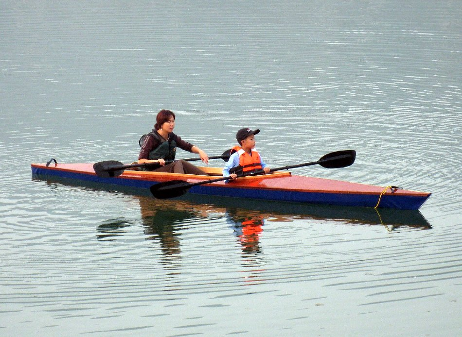

| Sea Tour Double by Romain Berard (CN) | Menu Previous Page Next Page |
|

Helen and William, from Beijing, China paddle the Sea Tour Double. Romain build an open style washboard coaming vs 2 separate ocean style coamings.
The hull is PVC and the deck plywood. The kayak's dimensions are 20' length X 26" beam.
|
|